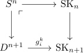

CW Complex
Definition
Let $(X, \mathcal{T})$ be a topological space and $A \subseteq X$ a subspace. A CW-complex on $X$ consists of $( \mathrm{SK}_n)$ a skeletal filtration
\begin{align*}
(\mathrm{Sk}_{n(X))_{n \geq -1}
\end{align*}
for $\mathrm{SK}_{-1}(X) = A$ and a natural homeomorphism
\begin{align*}
\mathrm{colim}_{n \rightarrow \infty} \mathrm{SK}_n(X) \cong X
\end{align*}
such that for each $\mathrm{SK}_n$ there exist attaching maps of a CW complex for $i \in I$
\begin{align*}
g_{i}^k: \partial [0,1]^k \rightarrow \mathrm{SK}_{n+1}
\end{align*}
, i.e. there exists a pushout

where $D^{n+1}$ is the disk
Note that $A$ is usually empty